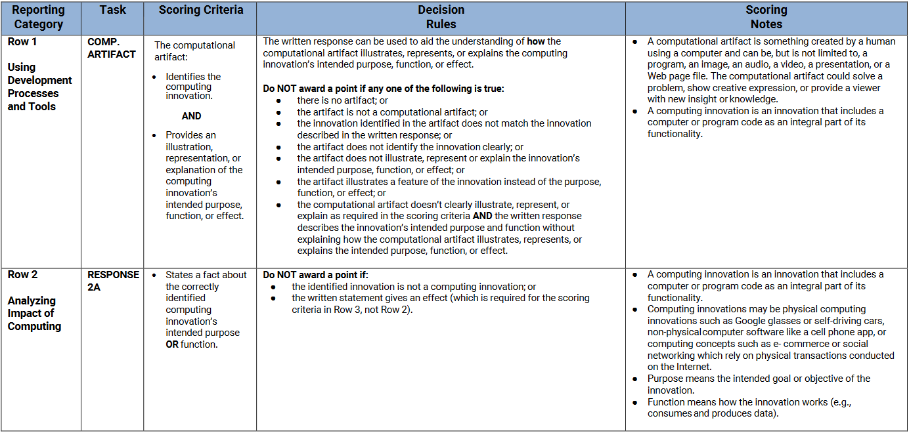
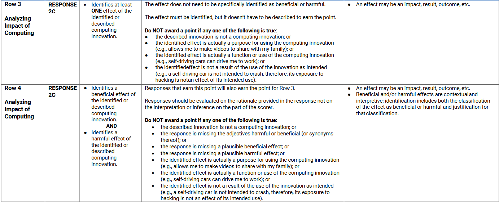
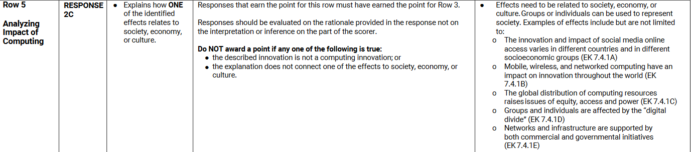
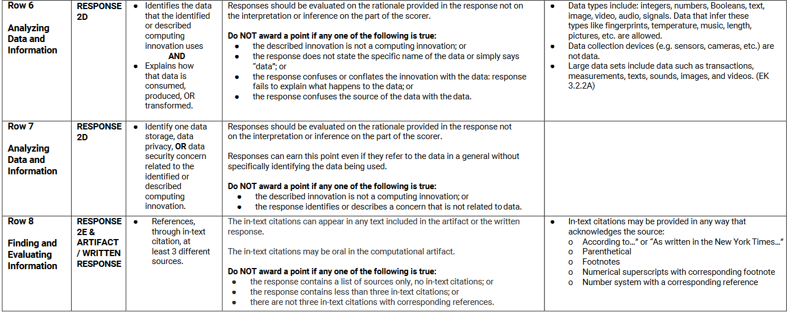

Overview
Identify a recent computing innovation, explore its impact, create a digital artifact, and write a response.
Submission: Computational Artifact (a digitally created piece of artwork - examples include but aren't limited to: collages of images and text created with software or a video) + Typed Response. Both must be sumbitted to your Digital Portfolio
Worth 16% of Exam Score ~ 8 hours to work in class.
The link to the rubric can be found here and is also displayed below:
   
Be sure to pay attention to the "Scoring Criteria" on how to get points for all 8 rows! Make sure that you double check this rubric, especially in the "Decision Rules". This category dictates how points will be deducted if your Explore Task falls under the "Do not award a point" category.
Let's use my Explore Task as an example and look at how it is graded. The PDF of my written response is here.
Row 1: +1 because the computing innovation is the Tesla Autopilot AND the Computational Artifact is an illustration and explanation of the computing innovation's intended purpose, function, or effect.
Row 2: +1 because it clearly states a fact about the Tesla Autopilot's intended purpose and function. NOTE: You only need either the purpose or function to get full points. To be safe, I put both.
Row 3: +1 because the response identifies an effect. NOTE: You do not have to say if it is beneficial or harmful to earn this point.
Row 4: +1 because the response identifies both a beneficial and harmful effect.
Row 5: +1 because the response identifies motorcyclists as "society" - defined in the "Scoring Notes" category as groups or individuals for the beneficial effect. Additionally, "thousands ofemployees in careers" (the economy) is mentioned as a harmful effect.
Row 6: +1 because the identified data is string and this is transformed into signals.
Row 7: +1 because the security concern was humans hacking the safety feature of the Tesla Autopilot.
Row 8: +1 because at least 3 different references were used.
Extra Notes: Notice how 2B is not part of the grading rubric so don't worry too much if you are struggling with 2B. If the rubric uses specific words like "beneficial" or "harmful", be sure to explicitly use them so your graders will have an easier time giving you points!
Click here to go to the next Performance Task: Create Task
Done with the Performance Tasks? Ready to head to the multiple choice portion of the exam?